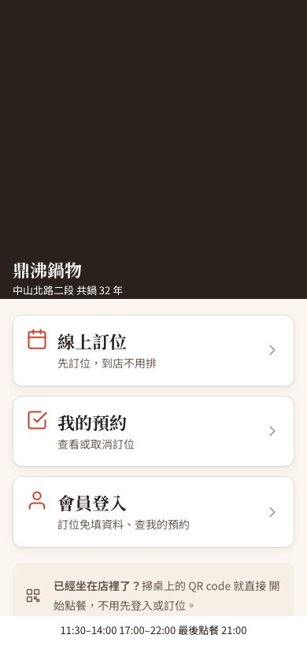

兩個 Vincent 自己修的問題，加一個整合時找到的
1. 新會員第一次驗證就失敗（Vincent 的 d258ecb）
新客人輸入手機、收到驗證碼、按下驗證，後端發現這支電話還沒有會員，就新增一筆。修正前這一步回 409，後端紀錄寫著 Column 'created_at' cannot be null。
資料表的 created_at 是「不可為空，預設值是現在時間」。但程式新增會員時沒設建立時間，JPA（Java Persistence API，Java 持久化介面）仍把這個欄位以 NULL 寫進 INSERT（新增資料的指令）。資料庫的預設值只有在 INSERT 完全沒寫這個欄位時才套用；明確寫了 NULL，就被「不可為空」擋下。
新電話第一次驗證回 200、newMember=true，會員中心讀得到建立時間；同一支電話第二次登入找到同一位會員，資料庫剛好一筆。
2. 「我的預約」連到會員登入頁（Vincent 的 5cce074）
首頁「我的預約」原本連到 /member（會員登入頁），沒有會員的客人想查自己的訂位，會被要求先登入，和卡片文字「查看或取消訂位」不一致。
3. 點一下提示，就從 A02 被帶到 A03（整合時找到）
同一個 5cce074 也把首頁下方「已經坐在店裡了？」的提示改成可以點，點了固定前往 /order/checkin/A03，推測是為了 demo（展示）方便。問題在報到頁（C-01）有一段合理的保護：手機上若有屬於別張桌的用餐身分，就先清掉（leaveTable()），因為掃到新桌的 QR（Quick Response，快速反應碼）代表客人換桌了。兩段程式單看都沒錯，合在一起就出事：
客人坐在 A02，已經掃碼加入、正在點餐，回首頁點了提示。
畫面跳到 A03 報到頁，報到頁發現他的身分屬於 A02，於是把 A02 的身分清掉。
結果：回不去 A02 的購物車；再按「開始點餐」，還會加入 A03 那桌別人的帳單。
實測修正前：A02 的客人點提示後，網址變成 /order/checkin/A03，手機上 A02 的用餐憑證被清掉。
每一項怎麼改、為什麼
- 建立時間交給資料庫（Vincent 的修法，保留）：
MemberEntity.createdAt加上@Column(updatable = false, insertable = false)，新增時不寫這個欄位，讓資料庫自己填現在時間，之後更新會員也不會動到它。為什麼：專案裡訂位、員工、用餐紀錄的建立時間本來就這樣寫，修法和既有慣例一致。 - 連結改到預約清單（Vincent 的修法，保留）：
Entrance.jsx的「我的預約」改連/member/reservations，這頁同時處理兩種人：用這支手機匿名訂過位的客人直接看到自己的訂位，有會員身分的人看到會員的訂位。 - 提示框改成不能點（整合時補上，不算原作者的缺失）：回到單純的說明，客人留在首頁，A02 的用餐憑證保留。為什麼：為了 demo 寫死的桌號，一放在每位客人都看得到的頁面就變成真的行為；真正的入口是桌上的 QR（每張桌一個網址），掃哪張桌就進哪張桌。demo 時可用座位管理列印的桌位 QR，或在網址列輸入
/order/checkin/桌號。報到頁「別桌身分先清掉」的保護本身是對的，沒有修改（後來在同桌客人的身分憑證改成先保留）。 - 延伸觀察：資料庫的「現在時間」是哪一區的時間？實測會員建立時間顯示 11:09，當時台北時間是 19:09。團隊的
backend/compose.yaml沒設 MySQL 時區，資料庫預設用 UTC（Coordinated Universal Time，協調世界時），用預設值填的時間都比台北早 8 小時；程式自己寫入的時間（候位、付款）則是台北時間。這不是這次修正造成的，會員中心只顯示「某年某月加入」，影響很小；時區一致性會在 Harry 的共用技術地基（L0，Level 0）整理中統一處理。
修正前重現、修正後通過
- 遠端合併
d733f0a（含 Vincent 的d258ecb、5cce074），沒有任何衝突；入口頁修正為 Git commite46a4fd。 - HTTP（Hypertext Transfer Protocol，超文字傳輸協定）與資料庫檢查：新會員註冊修正前 1 項失敗（重現 409），修正後 5 項全過；合併後 36 項既有基線全過。完整 HTTP 紀錄
- 瀏覽器（390 像素寬）：入口頁修正前 2 項失敗（重現帶錯桌、憑證被清），修正後 4 項全過（網址維持在首頁、用餐憑證不變、「我的預約」打開
/member/reservations）；另有 15 條既有頁面路由全過。完整瀏覽器紀錄 - 測試在隔離的 MySQL 5.7 容器進行，驗證碼從測試資料庫讀出，沒有發送任何簡訊。


本篇真的用到的
- JPA 欄位設定與資料庫預設值：
insertable／updatable決定哪些欄位交給資料庫處理（MemberEntity.java）。 - MySQL 約束與時區：
NOT NULL、DEFAULT CURRENT_TIMESTAMP(3)（schema.sql）與伺服器時區。 - 手機 OTP（One-Time Password，一次性密碼）登入、首次登入自動建立會員：
MemberAuthService。 - 單頁應用程式的路由與瀏覽器儲存：React Router 換頁，用餐憑證存在 localStorage（
Entrance.jsx、tokenStore.ts）。 - 修正前後對照的實測：同一份測試腳本先重現問題、再證明修好。
- 學到什麼：看懂錯誤訊息、找到「預設值只在沒寫欄位時才生效」，並用專案既有寫法解決；為 demo 寫死的值不要留在客人看得到的頁面；改一個連結時，也要看連過去那一頁會做什麼；時間欄位要問「資料庫與程式的現在時間是同一個時區嗎」。
新手名詞表
- 遠端分支／合併（merge）
- 遠端分支是放在 GitHub 上、大家共用的版本；合併是把別人的更新和自己的版本整合在一起。
- SHA／Git commit
- SHA 是 Secure Hash Algorithm（安全雜湊演算法）；Git 用它為每個版本（commit）產生識別碼，本文列的是短識別碼。
- HTTP 狀態碼 200／409
- 200 代表成功；409 代表和資料庫目前的資料或規則衝突，這裡是寫入違反「不可為空」。
- OTP（One-Time Password，一次性密碼）
- 手機收到的 6 位數驗證碼，只能用一次、有期限。
- NOT NULL 與預設值（DEFAULT）
- NOT NULL 是欄位不能是空的；DEFAULT 是新增時沒提供這欄就用這個值。明確寫入 NULL 不算「沒提供」。
- 用餐憑證（session token）
- 客人掃碼加入某張桌後拿到的一串識別碼，之後點餐、看帳單都靠它證明「我是這桌的人」。
- localStorage
- 瀏覽器替每個網站保存資料的空間；用餐憑證存在這裡，關掉頁面再打開仍在同一桌。
- QR
- 手機相機可快速讀取的方形圖碼；本案每張桌一個，內容是該桌的報到網址。
- C-00／C-01
- 畫面規格的編號：C-00 是顧客首頁，C-01 是掃碼後的桌位報到頁。
- demo（展示）捷徑
- 為了展示方便暫時寫死的值或入口；放在正式頁面上，就會被真正的使用者用到。